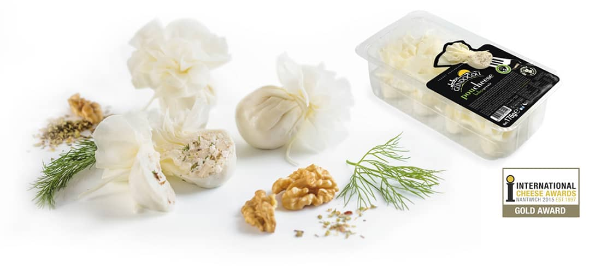

FARKIMIZ
İnovasyon alanında ödüller kazanan gurme lezzetlerimizle, daima özgünlük ve doğallığın peşinde, sofralarda peynir aşkını yeniden yorumluyoruz.
-

İÇİ DE DIŞI DAPEYNİR
BOHÇA PEYNİRİ
Uzun yıllar süren araştırma ve geliştirme çabalarımızın sonucunu, deneyen herkesi hayran bırakan bir lezzetle aldık. Şık tasarımıyla fark yaratan Bohça Peynirimiz, dünyanın en büyük ve en iyi yarışması Nantwich’ten kazandığı Altın Ödül ile benzersiz lezzetini çoktan kanıtladı. Nasıl mı? Ege’nin temiz havasında ve sağlıklı koşullarda, temiz ot ve yemlerle beslenen ineklerin sütünü sağan çiftliklerden elde edilen doğal ve taze sütlerle... İç malzemesindeki, bohça şeklindeki ve bağlanışındaki el maharetiyle... Özel bir yağın içerisinde ambalajlanan doğallık ve tazelikle... Ve tabii ki üretimin her aşamasındaki özenle...
-
GÜNÜN HER ANIPEYNİRHEM ÇITIRHEM SAĞLIKLI
CIPSCHEESE
Peyniri freze dry (dondurarak kurutma) teknolojisi ile kuruttuk, yenilikçi, eğlenceli, sağlıklı ve pratik Cipscheese lezzetini sofralara sunduk. Dünyadaki en gelişmiş kurutma yöntemi olan ve ürünlerin besin değerini %97 oranında koruyan freze dry ile hazırladığımız, hem çocukların hem büyüklerin çok sevdiği bu enfes lezzeti günün her anında sağlık ve tazelikle tüketebilirsiniz.

-
SOFRALARINYENİ YILDIZI
MARBLE CHEDDAR PEYNİRİ
Tüm dünyanın çok sevdiği, özellikle hamburger, pizza, tost ve et yemeklerinin vazgeçilmezi Marble Cheddar peynirini sizler için Türkiye’de üretmeye başladık. Çiftliklerimizde taze sütlerden, tamamen doğal yollarla ürettiğimiz Marble Cheddar, özgün tadı ve aromasıyla lezzet tutkunlarının sofralarını süslüyor. Farklı peynir çeşitlerini sevenler bu enfes lezzetten vazgeçemiyor.
-
TARİFSİZLEZZET
SPICHEESE
Kaşar peynirini hiç bu haliyle görmemiştiniz! Büyük küçük herkes lezzete doysun diye Spicheese kaşar peynirini taze sütlerle, domates kurusu, kekik ve çörek otu ekleyerek hazırladık, özgün bir yorumla bambaşka bir tat yakaladık. Taze baharat kokusuyla olan uyumunu yer yemez siz de fark edeceksiniz. Dilim dilim lezzetiyle Spicheese kaşar peynirini tostlarınızda, sandviçlerinizde ve kahvaltılarınızda pratik bir şekilde kullanabilirsiniz.